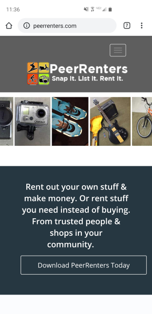
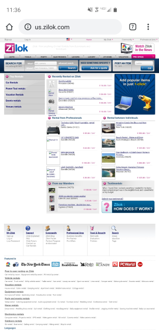
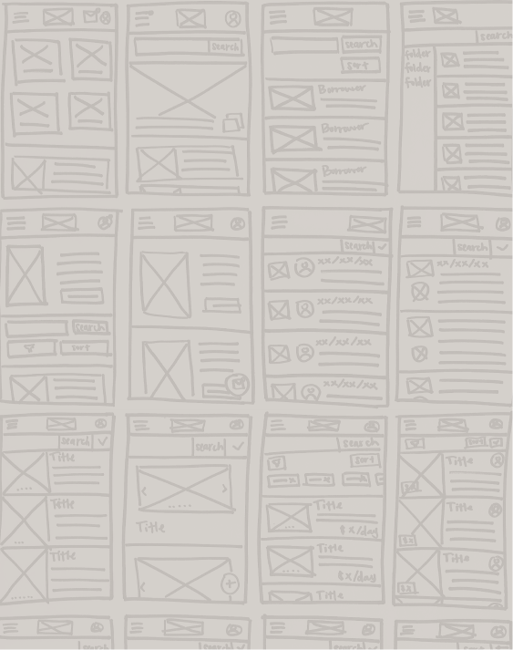
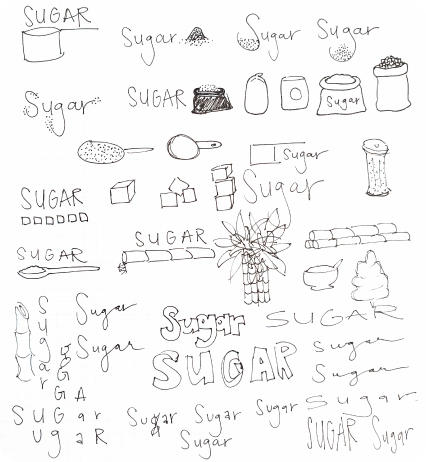
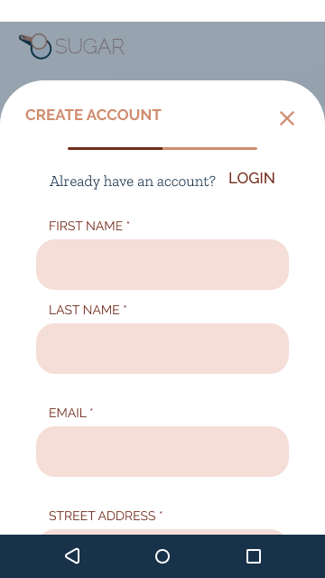
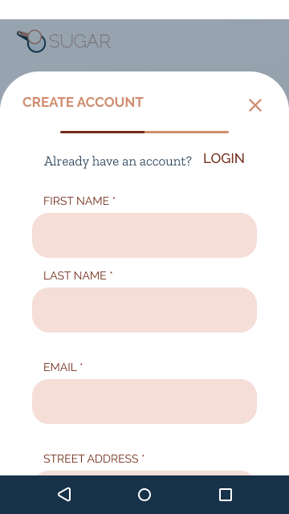
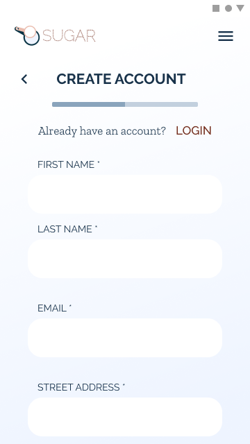
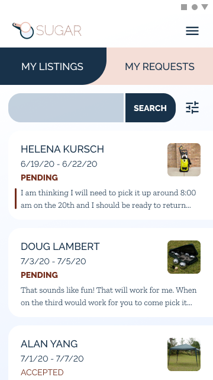

Research & Discovery
Competitive Analysis
This isn’t a new concept. Many sites have come and gone trying to address this very problem. Everyone loves the idea, but no one has been particularly successful. Three major players in the market today are Fat Llama, PeerRenters, and ZiLok.

Fat Llama
Fat Llama has strong visual design, insurance for renters, and an intuitive site. However, the platform is expensive, taking a 15% cut from both parties on every transaction.

PeerRenters
PeerRenters is only available as an iOS app, so they are missing out on a huge portion of potential users.

ZiLok
ZiLok has been around a while, which is obvious from their website, which has a dated, cluttered, and unresponsive interface.
Competitive Analysis
Survey
There is definitely room in the market for a product that can really solve user needs. In order to understand what those user needs are, I conducted a survey.
93%
open to lending
83%
open to borrowing
100%
concerned about damaged items
71%
more comfortable dealing with acquaintances
66%
expect to pay or be paid less when dealing with acquaintances
45%
don't know if lenders should be paid
Survey Results
User Needs
Peace of mind
Control over who they interact with
Guildance for pricing
Control over pricing
User Personas
From the survey results, I learned that there are three types of user. I created a persona for each type.

Jessica Hart
Lender & Borrower

Samantha Elliott
Borrower
Britt Perkins
Reluctant
User Personas
Information Architecture
User Stories
From the survey and personas, I wrote the user stories and prioritized them.
The stories include basic app functions like create account, add listing, etc. But the stories that directly address the main user needs are:
Peace of mind: As a user, I want a signed contract so I know what to do if something goes wrong.
Control over who they interact with: As a lender, I want to accept or decline a request to borrow an item.
Guidance for how much to charge: As a lender, I want to know how much to charge for an item.
Control over how much to charge: As a lender, I want to set the price for my item.
Although the survey suggested that users might be interested in having social features in the site so they can share with people they know, I chose not to include that in the initial MVP. I wanted to create the leanest site that would get the job done well, but not perfectly. The leanest way to solve this was to give the control to the user, so lenders can choose to accept or deny any request for any reason.
User Stories

User Flows
From the user stories, I built out the user flows for my solution. This created a framework for the screen that I would need to design.
User Flows

Wireframes
I chose to brainstorm with physical sketches to make sure I was considering lots of different ideas and none of them were too sticky. I sketched at least 4 options for each screen and then selected the best, which was sometimes a combination of multiple ideas.
Once I had decided the general layouts for my screens, I created digital wireframes in Figma. I wanted to keep these wireframes very stripped down and gray-scale with only the basic layout and functionality so that I could test the basic functionality of my solution.
Wireframe Sketches
Wireframe Prototype
Usability Testing - Round 1
With my wireframes, I created an InVision prototype for my first round of usability testing.
I had my users guess the purpose of my site based only on the home screen and then I asked them to complete 4 tasks:
Create an account
Add a listing
Request to borrow an item
Delete a listing
Key Takeaways
The purpose of the site was very unclear. I was missing a hero image in my wireframes, so I thought creating an illustration for the home page would help.
I had two separate menus in my initial design and found that it was very confusing for some users. I decided to just combine everything into one menu.
The “Create Listing” button was too difficult for users to find. I thought I would add a direct link into the navigation menu to make it more accessible.
Users were confused about which page they were on. My initial thought was that adding color and style to the screens would help visually differentiate the screens.
Users didn’t understand some of the terms I was using, specifically around pricing. I thought adding some definitions and tips would help clarify the process.
Visual Design & Branding
Brand Characteristics
The id “Sugar” comes from the concept of borrowing a cup of sugar from a neighbor, so I wanted to embody that neighborly vibe in the branding. However, because I knew that users were concerned about damage and theft, I needed to make sure the site came across as professional and trustworthy. The brand characteristics I wanted to embody are:
Professional
Fun
Friendly
Gender-neutral
Minimal
Color Palette
For the color palette, my initial thought was to use greens because the environment was such a large motivator for users. However, I ultimately felt that didn’t jive well with the id “Sugar”, and decided I could do better. Pinks and purples are an obvious choice because they are bubbly and sweet, but I wanted to keep it gender neutral and that could easily turn feminine. I decided on a terracotta orange and periwinkle blue. They are gender neutral, friendly, professional, earthy, and align well with the id “Sugar”.
Typography
H1 RALEWAY BOLD 21px
H2 RALEWAY REGULAR 21px
H3 RALEWAY EXTRABOLD 14px
H4 RALEWAY REGULAR 14px
H5 Zilla Slab Light 17px
H6 Zilla Slab Light 14px
I struggled with the typography because I found it difficult to balance the fun/friendly side with the professional/trustworthy side. I knew I wanted to use two typefaces, one for the headers and one for body text.
For the headers, I liked the personality of some of the more organic typefaces, but ultimately decided they felt unprofessional. As for body text, I knew I wanted something with a serif and a fairly uniform stroke so that it would be easy to read. I decided to use Raleway for the headers and Zilla Slab for the body.
The logo text is actually a modification of Raleway Dots, but rather than dots, I used small squares, reminiscent of sugar cubes.
Logo
I had a lot of ideas for the logo mark, but I decided to use measuring cups as a nod to the “cup of sugar” genesis. I created both light and dark versions of the logo so it will stand out on a variety of backgrounds.


High Fidelity Mockups - v1
Once I had determined the direction I wanted to take the brand, I was able to create some high fidelity mockups, incorporating my learnings from the first round of usability testing. Some of the major edits I made were:
Adding an illustration to help users understand the purpose of the site.
Combining menus to help with navigation.
Linking to the “Create Listing” screens directly from the navigation menu.
Adding color and style to help with page differentiation.
Adding definitions and tips to help users through the process.

 HiFi Mockups v1
HiFi Mockups v1
Preference Testing
69% of participants preferred the gradient background (left).

88% of participants preferred the solid white background (right).
 

56% of participants preferred the pink message background (left). However, I did learn that the purpose of highlighting the message was unclear, so I knew I needed to adjust my design.
High Fidelity Mockups - v2
Taking all of that feedback into account, I made another round of iterations to my designs. The changes in this round were:
Scaling back the background colors.
Reducing the amount of dialog boxes.
Changing the “new message” highlight to a different type of marker.


HiFi Mockups v2
Usability Testing - Round 2
At this point, I had added quite a bit to my designs and I needed to validate my decisions. I did a second round of usability tests and this time built my prototype in Figma so that I could take advantage of the horizontal scrolling feature. For this test, I again asked the users to guess the purpose of the website and then to complete six tasks:
Create an account
Add a listing
Request to borrow an item
Accept a borrow request
Delete a listing
Respond to a new message
Key Takeaways
The purpose of the site was much more clear with the addition of the illustration.
Navigation within the site needed to be quicker. Users were getting frustrated that they had to go into the menu to get anywhere, so I thought adding a bottom navigation bar would make the site more accessible.
During one of my iterations, I had accidentally removed the “Create Listing” button from my navigation menu, so it was once again too difficult to find. I thought the bottom navigation bar would be a great place to include it.
Users were still having a difficult time with page differentiation, even after adding color and style. I decided to do three things:
Add page titles.
Change the color of the search bar on some pages and add prompting text.
Change the layout of the listing cards within the browse section of the site.
Final Design & Conclusion
Final Design
In my final design, I made the following changes:
Added bottom navigation with a “Create Listing” button.
Added page titles.
Changed search bar color and added prompting text.
Changed the layout of the listing cards within browse so they no longer resemble the listings on the “My Listings” page.
Prototype
Conclusion
The problems I set out to solve were wasted money, storage, and landfill. There is ample opportunity in the marketplace for a product that solves users’ needs, which are:
Peace of mind
Control over who they interact with
Guidance for pricing
Control over pricing
Sugar delivers on all of these user needs with a platform that is friendly, trustworthy, and intuitive and gives consumers the option to share things within their neighborhood.